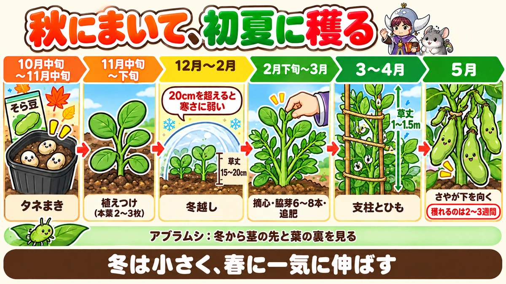
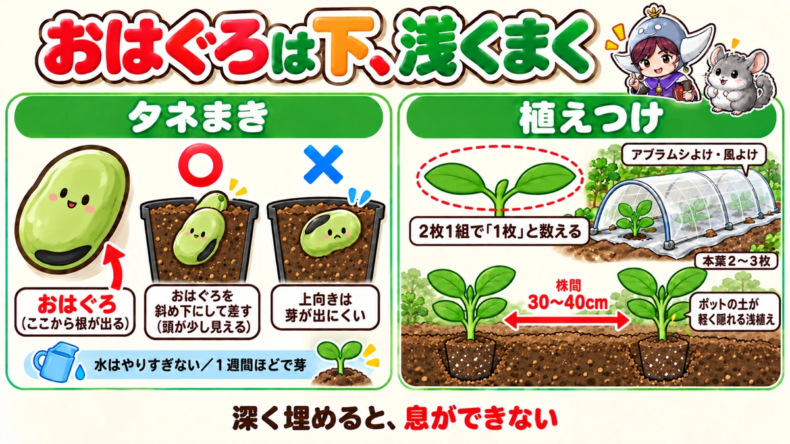
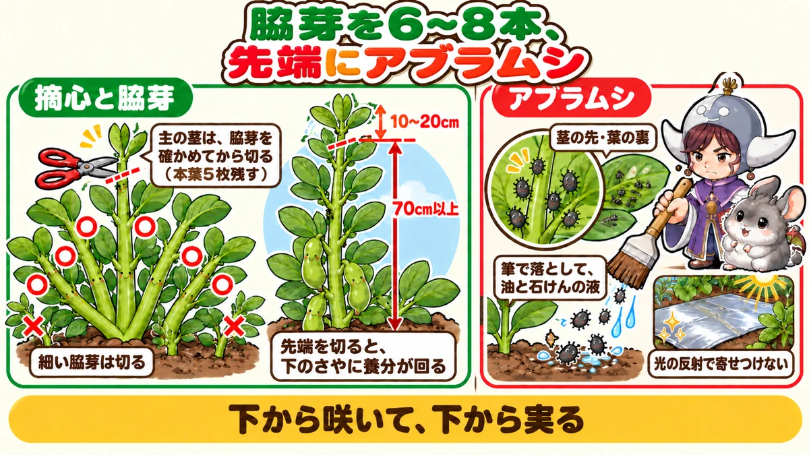

そら豆の育て方｜まき時、植えつけ、冬越し、摘心と脇芽、追肥、アブラムシ、収穫
📖 この記事の目次
この記事で分かること
- そら豆は、秋にタネをまいて冬を越させ、春から初夏に収穫する野菜です。畑にいる期間は半年以上と長く、収穫できる期間は2〜3週間と短い野菜です。
- タネまきは、一般的な地域で10月中旬から11月中旬。早くまきすぎて大きく育てると、冬の寒さに弱くなります。
- 冬は「大きくしすぎない」がいちばんのこつです。草丈15〜20cmほどで冬を迎えるのが目安です。
- 春に主の茎を摘心し、脇芽を6〜8本にしぼると、さやが大きくそろいます。
- 豆の仲間ですが、そら豆は肥料を比較的多く使います。追肥は春に。冬のうちは控えめにします。
- 最大の敵はアブラムシです。茎の先と葉の裏を、冬から見ておきます。
- さやが下を向き、背筋が黒っぽくなったら収穫のサインです。
そら豆は、穫りたてをゆでて食べる味が格別な、初夏の楽しみです。一方で、「冬に枯れてしまった」「花が咲いたのにさやがつかない」「アブラムシで真っ黒になった」という声もよく聞きます。
そら豆は、秋にまいて春に穫るまで、半年以上も畑にいる野菜です。そのぶん、季節ごとにやることが少しずつ違います。この記事では、タネまきから収穫まで、季節の順番に書いていきます。話す人によって考え方が分かれるところは、両方の考え方を並べておきます。
早見：そら豆の基本
時期の目安（一般的な地域）
- タネまき：10月中旬〜11月中旬
- 植えつけ：まいてから15〜20日、本葉2〜3枚のころ。11月中旬〜下旬
- 冬越し：草丈15〜20cmほどで冬に入る。1〜2月の寒い時期は不織布で守る
- 摘心と脇芽の整理：2月下旬〜3月がおすすめ
- 追肥：2月下旬〜3月上旬に1回。花が咲くころ、さやがつくころにも
- 収穫：5月ごろ。収穫できる期間は2〜3週間
数字の目安
- 株間：30〜40cm
- 脇芽：6〜8本に整理する
- 植えつけ苗の大きさ：本葉3枚ほど、高さ10cmほど
- 草丈：大きくなると1〜1.5mほどになるので、倒れないように支える

そら豆という野菜
秋にまいて、初夏に穫る
そら豆は、食べるのは春から初夏ですが、育てはじめるのは秋です。秋にタネをまき、小さな株のまま冬を越させ、暖かくなると一気に伸びて花を咲かせ、さやをつけます。
畑にいる期間がとても長いのに、収穫できるのは2〜3週間ほどです。だからこそ、穫りどきを逃さないことが大切な野菜でもあります。
寒さに強い。ただし大きな株は弱い
そら豆は、もともと寒さに強い野菜です。特に、育ちはじめの小さな株は寒さに強いと説明されていました。
ところが、冬が来る前に大きく育ちすぎると、寒さへの強さが弱まってしまいます。草丈が20cmを超えると寒さに弱くなる、という説明もありました。秋に早くまきすぎたり、肥料を入れすぎたりすると、真冬に寒波に当たって枯れてしまうことがあります。
そら豆づくりは、「秋に大きくしすぎず、春に一気に伸ばす」が基本の流れです。
豆の仲間なのに、肥料を使う
豆の仲間の多くは、根に住む菌の助けを借りて、空気中の窒素を養分として取りこめます。そのため、ほかの野菜より肥料が少なくてすみます。
ただ、そら豆は、豆の仲間の中では肥料を比較的多く必要とする野菜だ、とどの動画でも説明されていました。冬のあいだは控えめにして、春に伸びはじめるころに追肥で補う、というのが基本です。
品種を選ぶ
家庭菜園でよく育てられる品種
動画でよく名前が挙がっていたのは、次の2つです。
- 陵西一寸：大きさがそろいやすく、育てやすい品種として紹介されていた。収穫量が多く、病気に強いので、初めての方に向いているとされる
- お多福：大粒で作りやすいとして、毎年育てている例が紹介されていた
タネの袋には、まき時や育て方が書かれています。地域によってまき時が変わるので、必ず確かめてから選びましょう。
タネの値段と量
そら豆のタネは、1粒が大きいぶん、1袋に入っている数が少なく、割高に感じることがあります。50ml入りの袋に14粒ほど入っていた例がありました。100円ショップで、少ない量のタネが売られていることもあります。少しだけ育てたい方は、そうしたタネを使う手もあります。
植える場所と土
同じ場所に続けて植えない
そら豆は、同じ場所で続けて育てるのを嫌う野菜です。少なくとも3年、できれば4〜5年はあけたほうがよい、と説明されていました。枝豆、スナップエンドウ、きぬさやなど、ほかの豆の仲間を育てた場所も避けておくと安心です。
酸性の土に弱い
そら豆は、酸性の土に弱い野菜です。植える前に、石灰をまいて土の酸っぱさを調整しておきます。貝殻を原料にした石灰は、まいてすぐに植えられる、と紹介されていました。
水はけがよく、乾きすぎない場所
水はけの悪い場所では、根の張りが悪くなり、病気も出やすくなります。一方で、乾きすぎる場所も向きません。日当たりがよく、水はけがよい場所を選び、乾燥が心配ならマルチを張っておきます。
元肥は、ほとんど要らない
前に別の野菜を育てていた場所なら、元肥はほとんど要らない、と説明されていました。特に、なすのように追肥をたくさんした野菜のあとは、肥料が十分に残っていて、そら豆に向いているそうです。肥料が多すぎると、冬の前に育ちすぎて冬を越せなくなるので、入れすぎには注意します。
何も育てていなかった場所や、肥料が足りないと感じる場所では、1㎡あたり牛ふん3Lと鶏ふん100ccほどを入れておく、という目安が紹介されていました。
土の状態を測ってみる
市販の簡易な土の検査キットを使うと、土の酸っぱさや、肥料の成分がどれくらいあるかの目安が分かります。土を水に溶かし、試験紙の色の変わり方で調べるもので、すぐに手元で結果が出ます。動画の例では、窒素がかなり少なかったので牛ふんを足すことにし、リン酸は足りていたので鶏ふんは入れない、と判断していました。
タネまき
まく時期
一般的な地域では、10月中旬から11月中旬にかけてまきます。そら豆のタネが芽を出しやすい温度は15〜25℃、育ちやすい温度は15〜20℃ほどと説明されていました。
早まきに注意
秋が暖かい年は、早くまきすぎると、冬になる前に大きく育ちすぎてしまいます。暖かい日が続く年は、まく時期を少し遅らせることも考えましょう。逆に、まくのが遅すぎると、寒さが一気に来て育たなくなることもあります。
ポットで苗を育てるのがおすすめ
そら豆は、畑に直接まく方法と、ポットで苗を育てて植える方法があります。動画では、ポットで苗を育てる方法がすすめられていました。
- 豆のタネは鳥に狙われやすい
- タネが高いので、確実に芽を出させたい
- 芽の出方や育ちがそろいやすい
まき方の手順
- 直径9cmのポリポットに、タネまき用の土を8割ほど入れる
- タネの「おはぐろ」を斜め下に向けて差しこむ
- タネの頭が少し見えるくらいに、軽く土をかける
- 水をやる
「おはぐろ」は下に
そら豆のタネには、黒い筋の入った「おはぐろ」と呼ばれる部分があります。ここから根が出てきます。おはぐろを斜め下に向けてまくのが基本で、上に向けてまくと芽が出にくくなる、と注意されていました。
タネに薬剤がコーティングされていると、おはぐろが見えにくいことがあります。その場合は、少しふくらんでくぼんでいる部分を探します。
浅くまく理由
タネが芽を出すには、酸素も必要です。そら豆のタネは大きいので、深く埋めすぎると酸素が足りなくなります。だから、頭が少し見えるくらいの浅まきにする、と説明されていました。
水のやりすぎに注意
そら豆のタネは、水を吸いすぎると割れたり、芽が出にくくなったりします。まいたあとの水は、やりすぎないようにします。
芽が出るまでは、土が乾ききらないように見ておきます。乾燥を防ぐために新聞紙をかけておく方法もありますが、芽が出たらすぐに外します。外し忘れると、ひょろひょろの苗になってしまいます。
ポットを置く場所
まいたポットは、雨の当たらない軒下などに置きます。秋でも暑い日は、ビニールハウスの中が30℃を超えないよう、換気に気をつけます。
芽が出たあとも、水のやりすぎは禁物です。豆の仲間はそれほど水を必要としないので、水をやりすぎると、あっという間にひょろひょろの苗になってしまいます。まいてから1週間ほどで芽が出てきます。

植えつけ
植えるのは、本葉2〜3枚のころ
まいてから15〜20日、本葉が2〜3枚になったころが植えつけの目安です。若い苗のほうが根づくのが早いので、植え遅れないようにします。本葉が3枚を超えて大きくなると、植えつけには少し遅い、と説明されていました。
本葉の数え方
そら豆の葉は、1本の軸の途中から2枚に分かれています。本葉を数えるときは、この2枚1組を「1枚」と数えます。
苗を買うなら
苗を買って植える場合は、本葉が3枚ほど、高さが10cmほどの苗を選びます。大きく育った苗は、寒さに弱くなっていることがあります。
植えつけの手順
- 株間30〜40cmで、植え穴をあける
- 植え穴に水をやる
- 必要なら、植え穴に肥料をごく少し入れ、土を少し戻す
- 苗をポットから出し、根鉢を崩さないように植える
- ポットの土が軽く隠れるくらいの浅植えにする
- たっぷり水をやる
株間を広くとるほど、風通しがよくなり、病気や虫が減ります。
植え穴に入れる肥料
植え穴には、肥料を入れない、またはごく少しだけにします。秋が暖かい年は、苗が大きくなりすぎないように、肥料は入れずに石灰だけにした例もありました。
一方で、窒素はそれほど要らないが、根の育ちや寒さへの強さのためにリン酸は必要なので、リン酸を含むぼかし肥をほんの少し入れる、という説明もありました。どちらも「冬の前に大きくしすぎない」ことを気にしている点は同じです。
マルチと防虫ネット
マルチを張って植えると、土の温度が上がって育ちがよくなり、雑草も抑えられます。光を反射する銀色のマルチを使うと、アブラムシが寄りつきにくくなります。黒いマルチでもかまいません。
植えたら、防虫ネットのトンネルをかけ、すそに土をかけてすき間をふさぎます。アブラムシよけのほか、冬の風よけ・寒さよけにもなります。銀色の糸が入った防虫ネットもあります。
冬越し
冬越しは、そら豆づくりでいちばん気を使う時期です。
冬に入る大きさの目安
冬を迎えるときの大きさは、草丈15〜20cmほどが目安だ、と説明されていました。15cmくらいで冬を迎えるのが理想、という説明もあります。草丈が20cmを超えると寒さに弱くなるので、それより大きくならないようにします。
大きく育ってしまったからといって、必ず冬を越せないわけではありません。その場合は、冬の守りを少し厚めにすれば冬を越せる、とも説明されていました。
不織布は、本当に寒くなってから
冬は、防虫ネットの上から不織布をかけて、霜や冷たい風から守ります。ただし、かける時期が早すぎると、中が暖かくなって育ちすぎてしまいます。11〜12月にかけるのは早く、本当に寒くなる1〜2月にかけるのがよい、と説明されていました。霜が降りはじめたら守りを始める、という考え方です。
不織布をかけるときも、株の両わきは風が通るようにあけておく、という例もありました。
寒さの厳しい地域では、不織布のトンネル
最低気温がマイナス4℃を下回るような地域や、冬の前に大きくなってしまった株は、防虫ネットの上からさらに不織布のトンネルをかけます。不織布は換気をしなくてよいので、寒さの厳しい2月いっぱいまで、かけたままで大丈夫だそうです。軽い霜が降りる程度の地域なら、防虫ネットや寒冷紗だけでも十分だと説明されていました。
株元に土を寄せる
株元に土を寄せておくと、株が風で揺れにくくなり、寒さよけにもなります。マルチの穴のすき間から冷たい風が入って、土が冷えるのも防げます。
余裕があれば、株元に枯れ草を敷きます。もみ殻、わら、落ち葉でもかまいません。
冬の水やり
そら豆は、冬のあいだはそれほど水を必要としません。ただ、12月から2月は雨が少なく、乾燥が続くこともあります。土が乾いているときは、晴れた日の日中の暖かい時間に水をやります。朝や夕方は冷えこむので避けます。
冬の追肥は、小さい株だけ
12月の時点で草丈が15〜20cmほどあれば、追肥は要りません。小さかったり、葉の色が薄く元気がなかったりする場合だけ、ぼかし肥をひとつまみ、株元にまきます。
小さすぎる株も困る
大きすぎる株は寒さに弱い一方、小さすぎるまま冬に入ると、春に大きく育つことができません。本葉5枚ほどになるまで育てたいので、育ちが遅い株は、防寒をして温度を保ってあげる、という説明もありました。
摘心と脇芽
なぜ摘心するのか
そら豆は、主の茎よりも、根元から出てくる脇芽のほうにさやがつきやすい野菜です。主の茎をそのまま伸ばしていると、養分が脇芽に届かず、収穫が減ってしまいます。たくさん穫りたい、大きなさやを穫りたいなら、主の茎を摘心する、と説明されていました。
摘心のタイミングは3回ある
主の茎を摘心するタイミングは、大きく分けて3回あります。
- 12月：草丈10〜15cmほどで、脇芽が出ているのを確かめてから、根元近くで主の茎を切る
- 2月下旬〜3月：草丈20〜30cmほどで脇芽が伸びてきたら、本葉を5枚残して主の茎の先を切る
- 4月：脇芽が20〜30cmほどになったら、主の茎を切り、細い脇芽も整理する
おすすめは、2月下旬〜3月のタイミングだと説明されていました。2月下旬ごろ暖かくなると、そら豆は一気に伸びはじめます。そのときに主の茎を摘心すると、ちょうど脇芽に勢いがつきます。
ただし、冬の前に大きく育ってしまった株は、寒さに弱くなっています。その場合は、12月のうちに摘心して背を低くしておくほうがよい、ということでした。
どのタイミングでも、主の茎を切る前に、脇芽が伸びているのを必ず確かめます。
脇芽は6〜8本に
脇芽は、何もしないと10本以上出てきます。多すぎると、1本1本が細くなり、さやも小さくなります。太い脇芽を6〜8本残し、細いものは切ります。株の中まで日が当たるようにするためでもあります。
先端の摘心
春になって脇芽が伸び、草丈が70cmを超えたら、先端を10〜20cmほど切ります。そら豆は、株元に近い下のほうから花が咲いて実がつき、上のほうはあまり実がつきません。先端を切ると、養分が下のさやに回り、アブラムシもつきにくくなります。倒れにくくなる効果もあります。遅くとも、草丈が1.5mになるまでには先端を切ります。

追肥
1回目は、春の伸びはじめ
1回目の追肥は、暖かくなって伸びはじめる2月下旬から3月上旬に行います。その後、花が咲きはじめたころと、さやがつきはじめたころにも追肥する、という説明もありました。
ただし、冬の前に大きくなりすぎた株は、この時期に追肥せず、花が咲きはじめてから追肥するようにします。
追肥のやり方
紹介されていたやり方の一例です。
- 株元から20〜30cmほど離れたところに、穴を2か所あける
- それぞれの穴に、鶏ふんを20ccずつ入れる（1株あたり40cc）
- 肥料が分解しやすいよう、穴に水を少し入れる
- 指で土を押しこんで埋め戻す
肥料をこぼして外に出したままにすると、そのにおいでアブラムシなどが寄ってくることがある、と注意されていました。肥料は穴の中に入れて、しっかり埋め戻します。
ぼかし肥を株元にひとつまみずつまく方法や、通路に鶏ふんのペレットをまく方法も紹介されていました。
支柱と倒れ防止
草丈1〜1.5mになる
そら豆は、春に大きく伸び、草丈が1〜1.5mほどになることがあります。そのままにしておくと、風で倒れてしまいます。株が倒れると、さやがそれ以上大きくならないこともあります。
四すみに支柱を立てて、ひもで囲む
3月から4月ごろ、うねの四すみに支柱を立て、ひもで株をぐるりと囲みます。いちばん下は地面から10cmほどの高さから張りはじめ、伸びるにつれて段を足していきます。たくさん育てている場合は、支柱の本数を増やします。
ひもの代わりに銀色のテープを使うと、アブラムシよけにもなる、と紹介されていました。
さやが重くなったら補強
収穫が近づくとさやが重くなり、株が倒れやすくなります。ひもの段を増やしたり、ゆるんだひもを締め直したりして補強します。株元に土を寄せておくのも、倒れにくくするのに役立ちます。
水やり
そら豆は、豆の仲間なので、花が咲くころとさやがつくころに水を必要とします。この時期に乾燥すると、さやのつきが悪くなります。雨が少なく土が乾いているときは、じょうろで水をやります。
冬のあいだは水を控えめにし、春の花とさやの時期に水を切らさない。季節で水のやり方を変えるのが、そら豆のこつです。
アブラムシの対策
そら豆を育てるうえで、いちばんの敵はアブラムシです。ほとんどのそら豆につく、と言われるほどです。
どこにつくか
アブラムシがつきやすいのは、次の場所です。
- 茎の先端（成長点）のあたり
- 葉の裏
先端のあたりが黒く見えたら、アブラムシがびっしりついていることがあります。下のほうの葉にはあまりつきませんが、上から払い落としたものがくっついていることもあるので、株全体を見ます。
冬から見ておく
アブラムシは、冬のあいだも茎の先端にひそんで冬を越すことがあります。そして、春になると一気に増えます。冬のうちに見つけて退治しておくことが、春の大発生を防ぐ近道です。冬の間にアブラムシを放っておくのは、いちばんよくある失敗のひとつとして紹介されていました。
退治のしかた
- やわらかい筆や刷毛で、アブラムシを払い落とす
- 下に落ちたアブラムシに、油と石けんを溶かした水をかける
油と石けんの液は、水2Lに、食用油をペットボトルのふたに2杯、液体せっけんを1杯混ぜて作る方法が紹介されていました。
寄せつけない工夫
- 銀色のマルチや、銀色の糸が入った防虫ネットで光を反射させる
- 貝殻を原料にした石灰を、株の上から2〜3週間に1回パラパラとまく
- 先端を摘心して、アブラムシが好む先端を減らす
- 肥料をこぼしたままにしない
放っておくと、病気にもつながる
アブラムシが大量に増えると、汁を吸われた葉が黒く変色してくることがあります。さらに、アブラムシがウイルスを運び、葉にまだら模様が出る病気にかかることもある、と説明されていました。アブラムシは、増える前に手を打つことが大切です。
一緒に植える野菜、離す野菜
風よけ・虫よけになる野菜
冬を越すそら豆のまわりに、ほかの野菜をいっしょに植える方法も紹介されていました。
- 春菊：独特のにおいで、豆に好まれるアブラムシを遠ざける効果が期待できる
- ほうれん草：冬に強く、葉を広げて、そら豆に冷たい風や霜が直接当たるのを防ぐ
- 小松菜、ラディッシュ：葉が大きく育って、風よけや霜よけになる
- ミニチンゲン菜：冬に強く、冬越しの間のそら豆を守ってくれる
まだ小さなそら豆の苗のそばで、背の低い葉物を育てておくと、場所を無駄なく使いながら、そら豆の冬越しを助けてもらえます。
ねぎの仲間とは離す
一方、ねぎの仲間とは相性がよくない、と説明されていました。ねぎの仲間は、豆の根に住む菌を遠ざけてしまうからです。そら豆は、ほうれん草のあとの場所や、ほうれん草のうねのあいだに植えるとよい、とすすめられていました。
困ったときの見方
花が咲かない、すぐ落ちる
花が咲かない、咲いてもすぐ枯れてしまう。そんなときに考えられる原因として、次の3つが紹介されていました。
- 防寒のしすぎ：そら豆は、冬に一定の寒さに当たることで花をつけます。タネまきが遅れた株を暖かくしすぎると、寒さに当たる期間が足りず、花がつかないことがある
- 日当たりの不足：株が混み合っていたり、脇芽を整理していなかったりすると、日が当たらず花がつきにくい。脇芽を6〜7本に整理する
- アブラムシ：養分を吸われて、花がしおれることがある
葉が黄色くなる
春になって葉が黄色くなったり、葉のふちが黒くなったり、株全体が大きくならなかったりすることがあります。考えられる原因として挙げられていたのは、次の3つです。
- 水はけの悪さ：根の張りが悪くなり、少しのことで弱りやすい
- 連作：前にそら豆やほかの豆を育てた場所
- 防寒の不足：冬の寒さで弱った
同じように育てていても、株によって差が出ることがあります。こうした株を引っぱってみると、根がゆるいことがある、とも紹介されていました。
葉の先が黒くなる
冬のあいだに、葉の先が黒く変色することがあります。考えられる原因は、乾燥、病気、寒さによる傷み、アブラムシの4つだと説明されていました。
- アブラムシがたくさんいれば、アブラムシの被害や病気を疑う
- 土がからからなら、乾燥を疑う
- 土が湿りすぎていて株全体が黒くなるなら、根の傷みを疑う
- 先端だけが黒いなら、寒さによる傷みの可能性がある
原因によって手当てが違うので、まず株と土をよく見てから対処します。
収穫
収穫のサイン
そら豆の収穫の目安は、いくつかあります。
- 空に向かって上を向いていたさやが、下を向いてくる
- さやの背筋が、黒っぽくなってつやが出てくる
- さやの表面の産毛がなくなり、全体の色が濃くなる
- さやを指で軽くさわると、中の豆の形が分かるほど、さやが押し出されている
最後の「さわって確かめる」がいちばん確実だ、という話もありました。まだ早いさやは、さやと豆のあいだにスポンジのようなやわらかさを感じます。
穫りどきは短い
収穫できる期間は2〜3週間ほどと短く、穫り遅れると、甘みや風味が落ちてしまいます。サインが出たら、早めに収穫します。
小さなさやは摘む
5月の中ごろになっても、長さ5cmほどの小さなさやは、収穫までに大きくなりません。上のほうについた小さなさやは早めに摘み取り、下の大きなさやに養分を集中させます。表面がぶよぶよして枯れかけているさやも、摘み取ります。
下のさやを穫ったら、片づける
上のさやと下のさやで育ち具合が明らかに違う場合、下の大きなさやを穫ったら、その株の収穫はおしまいです。粘らずに株を片づけ、次の野菜の準備を始めます。
穫り遅れたら、乾かして豆に
穫り遅れてかたくなったそら豆は、天日でからからに乾かして、乾燥豆として使う方法もあります。ゆでて、あんこのようにして楽しんでいる例も紹介されていました。
収穫前の手入れ
収穫が近づいたら、下のほうの黄色くなった葉や枯れかけた葉を取りのぞき、風通しをよくします。アブラムシにも、最後まで気を抜かないようにします。
プランターで育てる
1つのプランターに1株
直径20〜30cmほどのプランターなら、そら豆1株が目安です。底にすき間のあるプランターなら、底に石を敷かなくても大丈夫です。培養土をプランターの8割ほど入れ、軽くとんとん叩いて土をならします。
まき方
土の表面を軽く押さえて固めてから、おはぐろを斜め下に向けてタネを置き、土をかけて手で軽く押さえます。そのあと、底から水が流れ出るまでたっぷり水をやります。
12月にまく場合は、芽が出るまで室内の暖かい場所（15〜20℃ほど）に置き、芽が出たらベランダに出します。
その後の世話
土の表面が乾いたら、底から流れ出るまでたっぷり水をやります。3月になったら、油かすや鶏ふんなどの有機肥料を、株の周りに5〜10gほど入れます。草丈は70〜80cmほどになるので、支柱を立てて支えます。収穫は4〜5月です。
説明が分かれるところ
冬に入る大きさ
冬を迎える草丈の目安は、「15〜20cmほど」という説明と、「15cmほどが理想」「10〜15cmが望ましい」という説明がありました。どれも「20cmを超えないように」という点は共通しています。地域の寒さや、その年の暖かさで調整します。
冬の脇芽を切るか、伸ばすか
12月ごろに出てくる脇芽について、「この時期の脇芽は切って、主の茎を残して冬を越させ、春に出る脇芽を伸ばす」という説明がありました。一方、「脇芽が出ているのを確かめてから主の茎を摘心し、脇芽を6〜8本伸ばす」という説明もあります。
前者は特に大きなさやを穫ることを目的にした育て方です。初めての方は、脇芽を確かめてから主の茎を摘心する方法のほうが分かりやすいと思います。
タネにかける土の量
ポットまきでは「タネの頭が少し見えるくらい」という説明が多い一方、プランターに直接まく例では「タネがちょうど全部埋まるくらい」に土をかけていました。どちらも「深く埋めすぎない」点は同じです。
植え穴の肥料
「植え穴にはリン酸を含むぼかし肥を少し」という説明と、「暖かい年は肥料を入れず石灰だけ」という説明がありました。その年の秋の暖かさで、苗が大きくなりすぎないように調整している、という考え方は同じです。
よくある失敗
早くまいて、冬に枯れた
秋が暖かい年に早くまくと、冬の前に大きく育ちすぎ、寒波で枯れてしまいます。まく時期を少し遅らせる、肥料を控える、大きくなったら12月に摘心する、といった手で防ぎます。
不織布を早くかけすぎた
11〜12月から不織布をかけると、中が暖かくなって育ちすぎてしまいます。本当に寒くなる1〜2月からで十分です。
アブラムシを放っておいた
冬のうちに茎の先にいたアブラムシが、春に大発生し、さやがつかなくなるのがよくある失敗です。冬から先端と葉の裏を見ておきます。
支柱が間に合わず、倒れた
春に一気に伸びるので、気づいたときには倒れていることがあります。3〜4月には支柱とひもを用意しておきます。
穫り遅れた
収穫できる期間が短いので、気づいたらかたくなっていた、ということがあります。さやが下を向きはじめたら、毎日のように様子を見ます。
よくある質問
畑に直接まいてもいいですか
まいてもかまいません。ただ、豆のタネは鳥に狙われやすく、タネも高いので、確実に芽を出させたいならポットで苗を育てるほうが安心です、と説明されていました。
そら豆のあとには、何を植えればいいですか
そら豆を片づけたあとは、同じ豆の仲間を続けて植えないようにします。そら豆の根には、空気中の窒素を取りこむ菌が住んでいるので、根を残して土に戻すと、次の野菜の助けになる、という考え方もあります。
寒い地域でも育てられますか
寒さの厳しい地域では、秋にまいて冬を越させるのが難しいことがあります。冬越しの守りを厚くするか、地域のまき時をタネの袋で確かめてから育てます。
冬の前に大きく育ちすぎてしまいました
暖かい冬には、1月の時点で40〜50cmまで伸び、伸びた部分が寒さで枯れてしまった例も紹介されていました。冬の前に草丈が15cmを超えて伸びそうなら、本葉6枚目のあたりで主の茎の先を切って背を低くし、防寒を厚めにします。主の茎を切っても、春になれば脇芽が伸びて収穫できます。
苗は、いつごろ売られますか
11月ごろになると、ホームセンターなどで苗が売られはじめます。自分で苗を育てていない方は、本葉3枚ほど・高さ10cmほどの苗を選んで植えましょう。
さやが上を向いているのはなぜですか
そら豆は、空に向かってさやをつけることから「空豆」と呼ばれる、ともいわれます。さやが育って重くなると、下を向いてきます。これが収穫のサインの1つになります。
学ぶ：そら豆の1年を、しくみで見る
冬の寒さが、花をつける合図になる
そら豆は、冬のあいだに一定の寒さに当たることで、春に花をつけます。だから、冬に暖かくしすぎると、花がつきにくくなることがあります。冬の守りは「暖める」ためではなく、「冷たい北風や霜から守る」ためのもの、と考えるのがちょうどよいと説明されていました。
下から咲いて、下から実る
そら豆は、株元に近い下のほうから花が咲き、さやがつきます。上へ伸びるにつれて花も上につきますが、上のほうはあまり実になりません。だから、先端を切って養分を下に回したり、上の小さなさやを摘んだりするのです。
冬に根に養分をためる
冬のあいだ、そら豆は地上ではあまり大きくならず、根に養分をためています。そして春になると、そのたくわえを使って一気に伸び、花を咲かせ、さやを太らせます。収穫までの期間が短いので、冬の育て方が、春の収穫量を大きく左右する、と説明されていました。
肥料が要る豆、要らない豆
豆の仲間は、根に住む菌の働きで、空気中の窒素を取りこめます。それでも、そら豆はさやも豆も大きく、春の短い期間に一気に育つので、たくさんの養分を使います。だから、冬は控えめにしつつ、春に追肥で支えるのです。
まとめ
ここまで読んでくださって、ありがとうございます！
そら豆の育て方のポイントを、もう一度まとめておきます。
- 秋にまいて冬を越させ、5月ごろに穫る。収穫期間は2〜3週間と短い
- タネまきは10月中旬〜11月中旬。暖かい年は早まきしない
- ポットで苗を育て、おはぐろを斜め下に、頭が少し見えるくらいの浅まき
- 本葉2〜3枚で、株間30〜40cmに浅植え。酸性の土を嫌うので石灰を
- 冬は草丈15〜20cmほどで迎える。不織布は1〜2月から
- 2月下旬〜3月に主の茎を摘心し、脇芽を6〜8本に
- 追肥は春の伸びはじめに。冬に大きくなった株は花が咲いてから
- 3〜4月に支柱とひもで倒れ防止
- アブラムシは冬から先端と葉の裏を見る
- さやが下を向き、背筋が黒っぽくなったら収穫
- 同じ場所は3〜5年あける。ねぎの仲間とは離し、春菊やほうれん草をそばに
そら豆は、秋から初夏まで長く付き合う野菜です。冬に大きくしすぎず、春に一気に伸ばす。この流れさえ覚えておけば、穫りたてのそら豆を味わえる日がやってきます。
まずは、タネの袋でお住まいの地域のまき時を確かめて、ポットに1粒ずつまいてみてください
シルバーマルチ
光の反射でアブラムシを寄せつけにくくします。土の温度も上がり、雑草も抑えられます。
![[商品価格に関しましては、リンクが作成された時点と現時点で情報が変更されている場合がございます。]](https://hbb.afl.rakuten.co.jp/hgb/55e77bb2.a973bab2.55e77bb3.28befe28/?me_id=1223148&item_id=10001699&pc=https%3A%2F%2Fthumbnail.image.rakuten.co.jp%2F%400_mall%2Fideshokai%2Fcabinet%2Fam425.jpg%3F_ex%3D240x240&s=240x240&t=picttext "[商品価格に関しましては、リンクが作成された時点と現時点で情報が変更されている場合がございます。]")

防虫ネット
植えたらトンネルにして、すそを土で埋めます。アブラムシよけと、冬の風よけを兼ねます。

不織布
本当に寒くなる1〜2月に、防虫ネットの上からかけて霜と冷たい風から守ります。
![[商品価格に関しましては、リンクが作成された時点と現時点で情報が変更されている場合がございます。]](https://hbb.afl.rakuten.co.jp/hgb/56bc237a.e97551b1.56bc237b.2513ed10/?me_id=1310260&item_id=10000879&pc=https%3A%2F%2Fthumbnail.image.rakuten.co.jp%2F%400_mall%2Fdiokasei%2Fcabinet%2F007fusyokufu%2F12g%2Fimgrc0092049705.jpg%3F_ex%3D240x240&s=240x240&t=picttext "[商品価格に関しましては、リンクが作成された時点と現時点で情報が変更されている場合がございます。]")


次に読む
記事一覧へ